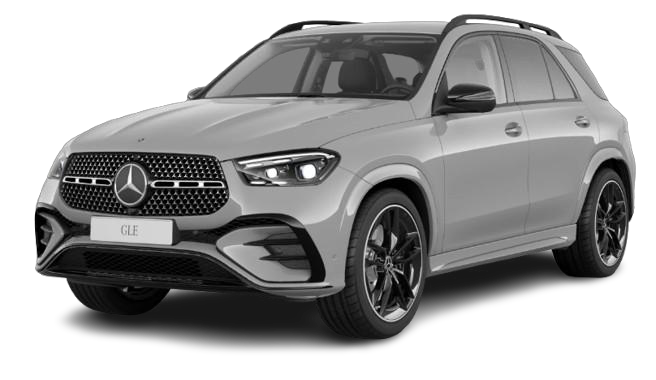
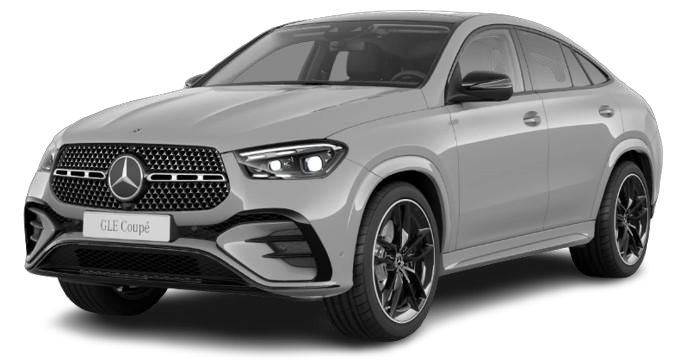
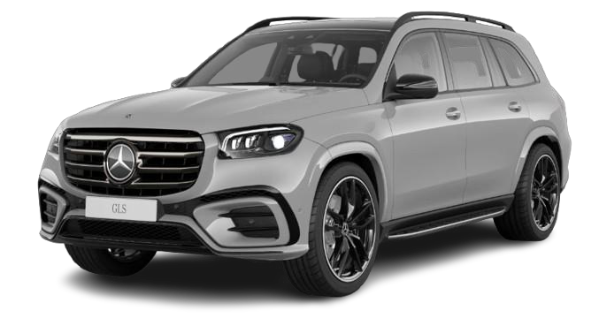

SUV한정 구성 350대
GLE 450
GLE 450 4MATIC AMG Line
AMG Line의 역동적인 외관에 블랙 디테일과 나파가죽을 더한 GLE.
141,400,000원
알파인 그레이 175대 · 옵시디안 블랙 175대
에디션 사양 살펴보기 ↗
GLE 450 4MATIC AMG LineThe collection
GLE SUV, GLE Coupé, 그리고 GLS.
같은 컬러 테마, 서로 다른 매력.
GLE 450 4MATIC AMG Line
AMG Line의 역동적인 외관에 블랙 디테일과 나파가죽을 더한 GLE.
141,400,000원
알파인 그레이 175대 · 옵시디안 블랙 175대
에디션 사양 살펴보기 ↗
GLE 450 4MATIC Coupé
쿠페의 유려한 실루엣에 나이트 패키지와 에디션 디테일을 더한 모델.
145,400,000원
알파인 그레이 115대 · 옵시디안 블랙 115대
에디션 사양 살펴보기 ↗
GLS 580 4MATIC AMG Line
23인치 블랙 휠의 존재감과 E-액티브 바디 컨트롤을 갖춘 GLS.
199,000,000원
알파인 그레이 100대
에디션 사양 살펴보기 ↗가격은 2026년 8월 제품자료에 기재된 에디션 모델의 권장소비자가격이며, 개별소비세 5% 기준입니다. 실제 계약 시 적용 가격·프로모션·배정 가능 여부는 별도 확인해 주세요.
GLE 450 / GLE 450 Coupé
나이트 패키지, 22인치 AMG 휠,
그리고 손끝에 닿는 나파가죽.
AMG Line 익스테리어에 나이트 패키지와 22인치 AMG 5 트윈 스포크 경량 알로이 휠을 조합했습니다. 알파인 그레이 또는 옵시디안 블랙 외장으로 선택할 수 있습니다.
AMG Line 인테리어와 블랙 나파가죽 시트에 대시보드·벨트라인 나파가죽을 더했습니다. 앤트러사이트 오픈포어 오크 우드 트림으로 실내를 마무리했습니다.
GLS 580 4MATIC AMG Line
알파인 그레이, 23인치 AMG 휠.
그리고 E-액티브 바디 컨트롤.
140주년 에디션 II의 GLS는 AMG Line 익스테리어와 나이트 패키지에 E-액티브 바디 컨트롤을 적용한 것이 핵심입니다.
GLE와 사양 비교하기 ↓이번 GLS 에디션의 주요 추가 사양은 E-액티브 바디 컨트롤입니다. 외장 디자인뿐 아니라 차체 제어 사양까지 함께 살펴보세요.
At a glance
에디션에 적용되는 주요 사양을 모았습니다.
표를 좌우로 밀어 모델별 사양을 비교하세요.
| 구분 | GLE 450 SUV | GLE 450 Coupé | GLS 580 |
|---|---|---|---|
| 권장소비자가 | 1억 4,140만원 | 1억 4,540만원 | 1억 9,900만원 |
| 자료상 한정 수량 | 350대 | 230대 | 100대 |
| 외장 컬러 | 알파인 그레이 / 옵시디안 블랙 | 알파인 그레이 / 옵시디안 블랙 | 알파인 그레이 |
| 나이트 패키지 | 적용 | 적용 | 적용 |
| AMG 휠 | 22인치 · RPJ | 22인치 · RPJ | 23인치 · RPK |
| 나파가죽 시트 | 블랙 · 801A | 블랙 · 801A | 블랙 · 951A |
| 모델별 주요 특징 | 대시보드·벨트라인 나파가죽 다크크롬 에디션 디테일 | 대시보드·벨트라인 나파가죽 다크크롬 에디션 디테일 | E-액티브 바디 컨트롤 |
| 에디션 패키지 코드 | DA1 | DA1 | DA3 |
| 패키지 옵션 가격별도 항목 안내 | 240만원 | 290만원 | 560만원 |
상단 가격은 자료에 기재된 에디션 모델의 권장소비자가입니다. 패키지 옵션 가격은 제품자료의 별도 항목이며, 이 페이지에서는 차량 가격에 다시 더하지 않았습니다. 최종 견적의 포함 내역은 상담 시 확인해 주세요.
Colour collection
956U
GLE SUV 175대 · GLE Coupé 115대 · GLS 100대
197U
GLE SUV 175대 · GLE Coupé 115대
수량은 제품자료 기준입니다. 색상 표시는 화면 이해를 돕기 위한 예시이며, 실제 색감은 조명과 디스플레이에 따라 다르게 보일 수 있습니다.
Questions & answers
이번 에디션은 알파인 그레이·옵시디안 블랙 컬러 테마에 나이트 패키지, 블랙 휠, 나파가죽을 조합한 구성이 특징입니다. GLE 두 모델은 대시보드·벨트라인 나파가죽과 다크크롬 에디션 디테일을, GLS는 E-액티브 바디 컨트롤을 주요 특징으로 확인할 수 있습니다.
네. MY26 GLE 450 4MATIC Coupé가 포함되며, 자료상 권장소비자가는 1억 4,540만원입니다. 알파인 그레이와 옵시디안 블랙 각 115대, 총 230대로 구성됩니다.
제공된 140주년 에디션 II 제품자료에서는 GLS 580에 MANUFAKTUR 알파인 그레이 100대만 안내하고 있습니다. GLE SUV와 GLE Coupé는 알파인 그레이와 옵시디안 블랙 두 컬러가 안내돼 있습니다.
아닙니다. 제품자료에 기재된 에디션 구성 수량입니다. 현재 배정 가능 차량, 잔여 재고, 예상 출고 일정은 모델·색상별로 별도 확인이 필요합니다.
페이지의 차량 가격은 2026년 8월 제품자료의 권장소비자가격이며 개별소비세 5% 기준입니다. 실제 계약 시 적용 가격, 프로모션과 금융 조건은 상담을 통해 확인해 주세요.
제공된 자료에는 현재 계약 가능 여부나 출고 일정이 기재돼 있지 않습니다. 관심 모델과 외장 색상을 알려주시면 한호만 팀장이 배정 가능 여부와 구매 조건을 확인해 안내드립니다.
BenzDream / Your advisor
관심 모델과 색상을 말씀해 주세요.
배정 가능 여부부터 구매 조건까지 직접 안내하겠습니다.
한호만 팀장 · 벤츠 고양 전시장
경기도 고양시 덕양구 의장로 110
 BenzDream 유튜브에서 만나기 ↗
BenzDream 유튜브에서 만나기 ↗제품 정보 기준: 2026년 8월 GLE / GLE Coupé / GLS 140주년 에디션 II 제품자료. 사진은 제품자료 수록 이미지이며 실제 국내 출고 차량의 사양과 차이가 있을 수 있습니다.